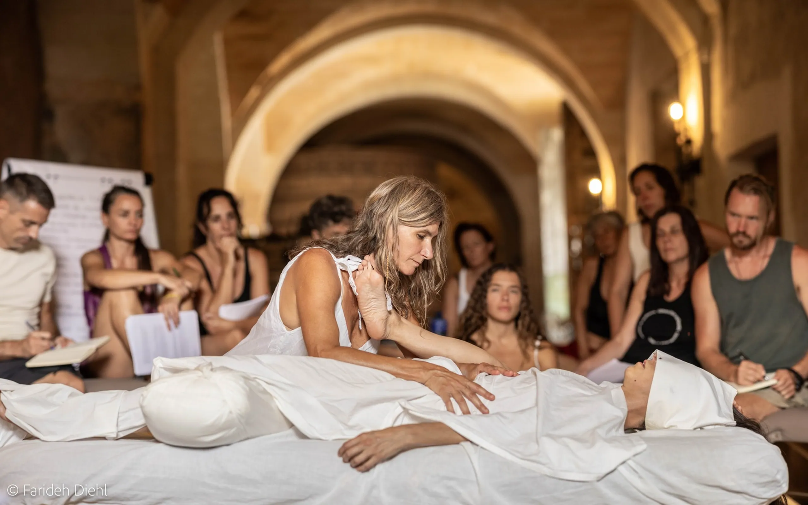
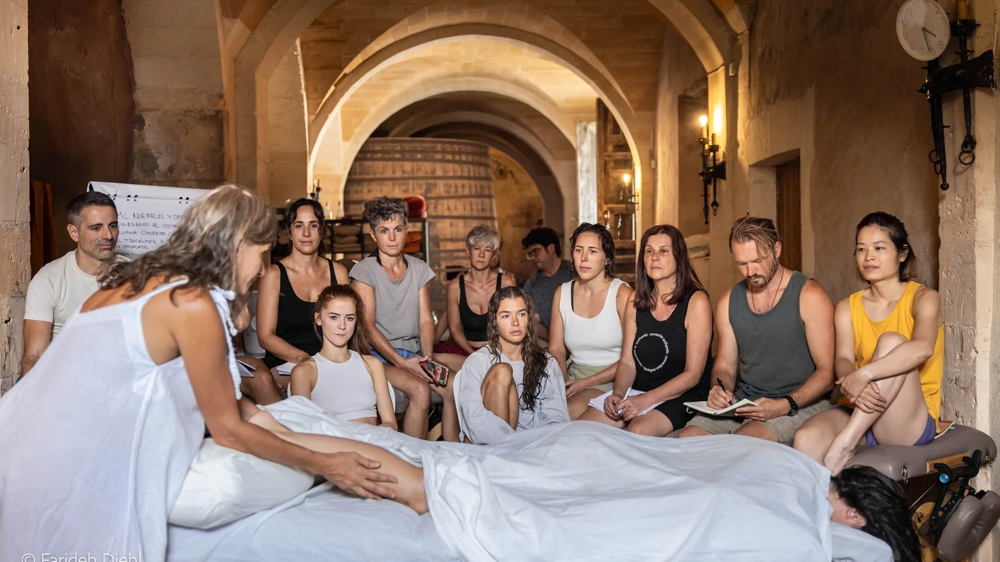
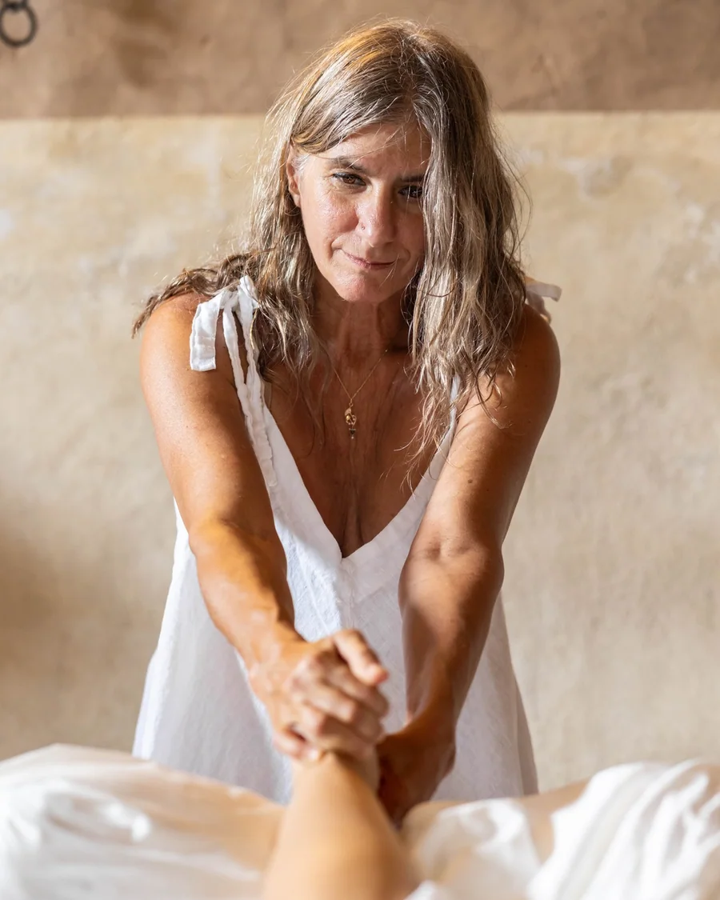
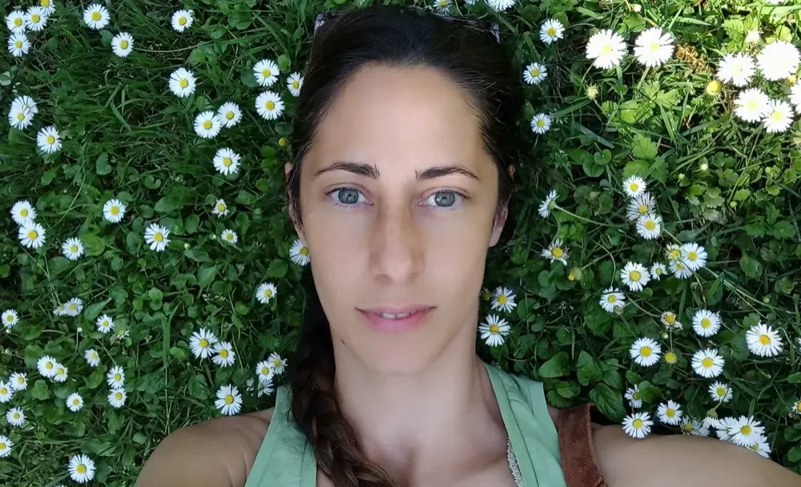

Spazio Bodywork® · formación profesional
Formación Anual
de Masaje Californiano
Psicosomático
Diez módulos, un fin de semana al mes en Madrid o Barcelona — o nueve días en Mallorca. Mismo temario y misma titulación.
Formato fin de semana2.250 €
- Diez módulos, un fin de semana al mes
- Reservas la plaza con la matrícula de 500 €
- Formación completa con el mismo grupo
Formato intensivo2 estancias
- Dos estancias de nueve días en Mallorca
- Casa rural, comida vegetariana y grupo que convive
- Precio y fechas por confirmar
Próxima entrada Barcelona · Módulo 1 · 21-22 de noviembre de 2026 (o 20-21 de febrero de 2027)
Madrid grupo en curso desde octubre de 2026
Sedes C/ Viladomat 152, 2ª (Barcelona) · C/ Gonzalo de Córdoba 17, of. B (Madrid)
Para quién es
¿Es tu formación?
No es un curso de fin de semana: es un recorrido largo, sostenido por un grupo que crea un espacio seguro.
Es para ti si…
- Quieres un recorrido largo, no un curso de fin de semana.
- Buscas adquirir conocimientos, habilidades y experiencia para acompañar con herramientas de regulación del sistema nervioso y trauma.
- Quieres aprender sostenido por un grupo que crea un espacio seguro.
No es para ti si…
- Buscas una colección rápida de técnicas.
- No puedes reservar un fin de semana al mes durante todo el año.
- Prefieres aprender sin poner el cuerpo.
Es una experiencia íntima entre compañeros de estudio. [CONFIRMAR: si hace falta haber hecho un curso introductorio o la formación básica intensiva]
Dos maneras de cursarlo
El mismo contenido, dos formas de vivirlo
Mismo temario y misma titulación. Cambia el calendario y la experiencia, no lo que aprendes. Puedes empezar en un formato y continuar en el otro.
Elige cómo quieres cursarlo
Formato fin de semana
Un fin de semana al mes
- Dónde
- Madrid y Barcelona
- Ritmo
- 10 módulos en un año
- Para quién
- Vives cerca y prefieres un proceso largo y sostenido
2.250 € reservas con 500 € a cuenta del total
Ver las fechas de mi sedeFormato intensivo
Nueve días en Mallorca
- Dónde
- Sant Joan, Mallorca · casa rural
- Ritmo
- Dos estancias de nueve días
- Para quién
- No puedes comprometer diez fines de semana, o quieres inmersión
[CONFIRMAR: precio y fechas]
Ver cómo funcionaDiez meses de proceso con el mismo grupo. El cuerpo asienta entre módulo y módulo, y lo que se abre tiene tiempo de integrarse.
Un fin de semana al mes, sábado y domingo de 10:00 a 19:30, en Madrid o en Barcelona. Cada sede mantiene su propio grupo y su propio recorrido.
Si un fin de semana al mes no te encaja, el formato intensivo da el mismo temario en dos estancias de nueve días.
Una casa rural en plena naturaleza, comida vegetariana y un grupo que convive. Te formas mientras desconectas de todo lo demás.
Dos estancias de nueve días en Sant Joan (Mallorca), con el tiempo entre ellas para practicar e integrar lo aprendido.
Mismo temario y misma titulación que el formato de fin de semana. Puedes empezar en un formato y continuar en el otro.
Formato intensivo
Cómo funciona el intensivo
Dónde Sant Joan, Mallorca · casa rural
Alojamiento y comida vegetariana en la misma casa: el grupo convive durante los nueve días.
[CONFIRMAR: fechas de las dos estancias, precio, qué incluye (alojamiento, comidas) y plazas]
Cómo se cursa Dos estancias, un mismo grupo
La primera estancia abre las bases del masaje californiano y la regulación del sistema nervioso; la segunda entra en el detalle y la teoría polivagal, igual que las dos mitades del formato de fin de semana.
- Primera estancia
- Vuelta a casa
- Segunda estancia
Fechas de los diez módulos
Calendario del formato de fin de semana
El grupo de la sede que elijas, con su propio recorrido y sus fechas.
Elige tu sede
Barcelona Spazio Bodywork · C/ Viladomat 152, 2ª planta, 08015
Dos maneras de empezar, un mismo grupo: puedes hacer el Módulo 1 en noviembre (opción A) o en febrero (opción B). Las dos entradas se unen en el Módulo 2, el 20-21 de marzo de 2027, y desde ahí seguís juntos hasta diciembre.
- 1 · opción A
- 1 · opción B
- 2
- 3
- 4
- 5
- 6
- 7
- 8
- 9
- 10
[CONFIRMAR: qué ocurre entre el Módulo 1 de noviembre y el Módulo 2 de marzo — son cuatro meses sin clase en la opción A]
Madrid Espacio Calithai · C/ Gonzalo de Córdoba 17, oficina B, 28010
Grupo en curso: arrancó el 24-25 de octubre de 2026. Incorporación a partir del Módulo 2: [CONFIRMAR: si se admite y en qué condiciones].
- 1
- 2
- 3
- 4
- 5
- 6
- 7
- 8
- 9
- 10
[CONFIRMAR: choque con Barcelona el 3-4 de julio de 2027 — Madrid Módulo 10 y Barcelona Módulo 6 caen el mismo fin de semana]
Elige un formato y el calendario, el precio y la reserva de abajo cambian con él. Los 2.250 € son del formato de fin de semana; el intensivo tiene sus propias fechas, precio y condiciones. [CONFIRMAR: fechas, precio y plazas del intensivo]

Inscripción
Precio y formas de pago
10 módulos · 1 fin de semana al mes
Un solo precio: 2.250 € por la formación completa. Reservas la plaza con la matrícula de 500 € y el resto se abona según las condiciones que recibes al reservar.
-
Formato anual · precio único
Los diez módulos
2.250€ / formación completa
- Diez fines de semana de formación, un fin de semana al mes
- Sábado y domingo, de 10:00 a 19:30
- Teoría, práctica y experiencia vivencial con el mismo grupo
- Madrid o Barcelona
- Mismo temario y misma titulación que el formato intensivo
- Precio total · 10 módulos
- 2.250 €
- Pagas hoy para reservar
- 500 €
- Queda pendiente
- 1.750 €
Los 1.750 € restantes se abonan antes del inicio de la formación [CONFIRMAR: fecha límite]. La plaza queda confirmada en el momento del pago, no antes.
[CONFIRMAR: que los 500 € se descuentan del total — si no se descontaran, el desembolso real sería de 2.750 €]
Reservar mi plaza · 500 €Matrícula de 500 € a cuenta del precio total, reembolsable. Si no abrimos el grupo o si cancelas antes del inicio de la formación, te devolvemos los 500 € íntegros.
[CONFIRMAR: plazas por convocatoria y cuántas están ocupadas — es la única escasez verdadera]
Qué incluye
Los diez módulos presenciales, sábado y domingo, en tu sede. [CONFIRMAR: materiales, manual]
Qué no incluye
[CONFIRMAR: comidas, alojamiento, desplazamientos]
Cómo se paga
Reservas la plaza pagando la matrícula de 500 €. La plaza queda confirmada en el momento del pago, no antes. [CONFIRMAR: si la matrícula se descuenta del total]
Devolución: los 500 € de la matrícula se devuelven íntegros si no abrimos el grupo o si cancelas antes del inicio. Titulación: la misma en los dos formatos. IVA: [CONFIRMAR] ¿Quieres pagar a plazos? [CONFIRMAR: si se ofrece financiación]
Programa
Diez módulos, dos mitades
Del Módulo 1 al 5 asientas las bases del masaje californiano con elementos de regulación del sistema nervioso. Del 6 al 10 profundizas con la teoría polivagal y la atención al detalle.
Más de 200 técnicas en diez fines de semana. Una formación densa, sostenida por un trabajo de fondo: el rol terapéutico, el trabajo somático de límites, la presencia sin juicios ni interpretaciones y un principio que atraviesa el año: no esfuerzo, menos es más.
Parte 1 · Bases
Los cinco primeros módulos: las bases del masaje californiano con los elementos de regulación del sistema nervioso.
[CONFIRMAR: el reparto exacto de contenidos por módulo y el título de cada uno]
- 01Autorregulación, setting terapéutico y regulación del sistema nervioso.
- 02Terminología somática: neurocepción, propiocepción e interocepción. Descarga, vórtice-contra vórtice.
- 03Qué es el trauma y cómo se manifiesta en el cuerpo; la fisiología del sistema de defensa.
- 04Acompañar procesos emocionales.
- 05Ejercicios somáticos y meditaciones activas basadas en las prácticas de 5 ritmos y otras dinámicas.
Parte 2 · Profundización
Los cinco últimos: el detalle del masaje californiano y la teoría polivagal.
- 06El rol terapéutico.
- 07Trabajo somático de límites.
- 08Respuestas de defensa en camilla: lucha, huida y congelación.
- 09Detectar las huellas traumáticas y re-significar el trauma.
- 10Integrar: caderas, antebrazos y muñecas, capas profundas del cuello y secuencias en supino.
El recorrido
Dónde está este paso
La Formación Anual es un tramo de un recorrido más largo. Antes, los talleres e introductorios y la formación básica intensiva; después, para quien quiera seguir, la carrera profesional. Si no sabes en qué punto estás, lo vemos contigo.
-
Talleres e introductorios
El primer contacto con el masaje californiano y el trabajo corporal psicosomático.
-
Formación básica intensiva
Nueve días de inmersión para iniciarse con práctica diaria y supervisión.
-
Estás aquí
Formación Anual
Diez módulos a lo largo de un año: el oficio, el grupo y el tiempo para incorporarlo.
-
Carrera profesional
Para quien quiere seguir formándose y acompañar procesos con más herramientas.
Reseñas en Google
Lo que cuentan quienes han pasado
5,0 ★★★★★
- 323 reseñas Barcelona
- 20 reseñas Madrid
Reseñas publicadas en Google sobre Spazio Bodywork, tal como las escribieron sus autores.
5,0 de media · 323 reseñas en Barcelona · 20 en Madrid
-
★★★★★
«Una hermosa experiencia con el grupo de Spazio Bodywork… el contacto consciente y de calidad es una de sus bases».
-
★★★★★
«Un espacio y un lugar cálido y acogedor donde se siente el acompañamiento, la escucha y el cuidado del grupo».
-
★★★★★
«Un viaje experiencial altamente recomendable… te eleva en tu sendero espiritual».
-
★★★★★
«Ha sido un antes y un después en mi vida».

Docentes
Quién enseña
En el trabajo corporal, la manera de tocar se aprende también recibiéndola. Por eso importa quién enseña y quién acompaña en la sala.
Sujati (Sandra C. Lacanna)
Creadora y directora de Spazio Bodywork®. Dirige el grupo de Barcelona.
Fundó la primera escuela de Masaje Californiano en España (2006). Más de 23 años de experiencia profesional: comenzó su formación como terapeuta en India en 1994, vivió dos años en la Comuna Internacional de Osho, se formó en Masaje Californiano en 2000 en la Oasis Massage School (donde fue asistente e instructora seis años) y está certificada internacionalmente como terapeuta de Masaje Esalen® por el Instituto Esalen de Big Sur (California), con formación en Experiencia Somática®.

María Lucas
Directora de Espacio Calithai, la sede de Madrid. Imparte allí el Módulo 1. [CONFIRMAR: quién imparte los módulos 2 a 10 en Madrid]
Terapeuta en Masaje Californiano y Masaje Esalen, directora de Espacio Calithai Masajes. Comienza su formación en Masaje Californiano viviendo en Argentina en el año 2006 donde descubre la Escuela de Masajes y Artes Curativas Oasis. En el 2008 se instala de nuevo en Madrid donde conoce a Sujati, con quien colaborará como asistenta para el Instituto Spazio Bodywork®.
Realiza la Certificación en Masaje Esalen, Tejido Profundo (con Yamuna y Roger – Oasis) y talleres de especialización con Ingrid May (Oasis). En el 2015 inaugura su propio espacio de trabajo en Madrid: Espacio Calithai Masajes, donde se dedica a dar sesiones de Masaje Californiano Esalen y a abrir el espacio de prácticas para los alumnos.
«Contemplo el cuerpo como una llave de exploración interna que nos conduce al silencio y a la alegría intrínseca de la vida.»
[CONFIRMAR: tamaño del grupo y número de ayudantes]
La reserva
Qué pasa cuando pulsas «Reservar»
Tres pasos. El último es el pago de la matrícula: hasta ahí no hay reserva.
-
Te informas
Aquí o escribiéndonos, antes de decidir nada.
-
Eliges sede y fecha
Las dos entradas de Barcelona o el grupo de Madrid, con el calendario a la vista.
-
Pagas la matrícula
500 € con tarjeta, en el mismo paso. No hay un «te escribimos luego»: la reserva se cierra ahí.
Widget de reserva con cobro
Barcelona · Módulo 1 · 21-22 de noviembre de 2026 (opción A)
Aquí van los dos botones de fecha del widget, con el cobro de la matrícula de 500 € dentro del mismo formulario. Hoy el widget termina en «recibirás información»: hay que cambiar el paso final a pago.
La reserva de Barcelona se cierra en el widget, con la fecha elegida y la matrícula de 500 €. Esos 500 € son reembolsables: si no abrimos el grupo o cancelas antes del inicio, se devuelven íntegros. Para Madrid, el grupo está en curso: escríbenos y lo vemos contigo.
¿Madrid? Escríbenos por WhatsApp
+34 693 059 088 (teléfono y WhatsApp) · info@spaziobodywork.com
La Formación Anual es una formación vivencial. No es una terapia ni sustituye a un tratamiento.
Dudas
Preguntas frecuentes
¿Necesito experiencia previa?
La formación arranca donde terminan los cursos introductorios, semi-intensivos e intensivos: las bases del masaje californiano y los elementos de regulación del sistema nervioso. Si no has hecho ninguno de ellos, escríbenos y te decimos por dónde empezar. [CONFIRMAR: si el curso introductorio es requisito o recomendación]
¿Qué tengo que hacer para reservar mi plaza?
Elegir sede y fecha y pagar la matrícula de 500 €. La plaza queda confirmada en el momento del pago, no antes.
¿Y si al final no puedo hacer la formación?
Si cancelas antes del inicio, te devolvemos los 500 € de la matrícula íntegros. Si no abrimos el grupo, también.
¿Cuánto se paga y cuándo?
2.250 € en total. Hoy pagas 500 € para reservar y los 1.750 € restantes, antes del inicio de la formación. [CONFIRMAR: fecha límite del resto]
¿Cuánto dura cada módulo?
Un fin de semana completo: sábado y domingo de 10:00 a 19:30, con pausa al mediodía.
¿Dónde se imparte?
En Madrid, en Espacio Calithai (C/ Gonzalo de Córdoba 17, oficina B) y en Barcelona, en Spazio Bodywork (C/ Viladomat 152, 2ª planta).
¿Hay otra manera de hacerla?
Sí: el formato intensivo, dos estancias de nueve días en Sant Joan (Mallorca), con el mismo temario y la misma titulación. Está explicado arriba.
¿Puedo pagar a plazos?
Estamos cerrando las condiciones del pago. Escríbenos y te contamos las opciones que haya en el momento de reservar. [CONFIRMAR: si se ofrece financiación]
Dudas y consultas
¿Te queda alguna duda?
Escríbenos y te contestamos en menos de 24 h.